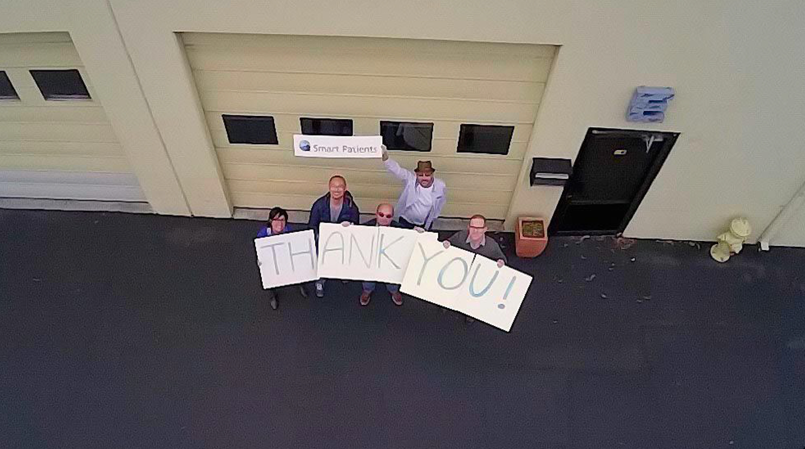

As we welcome 2015, we’d like thank the broader community that has helped us build useful and supportive communities on Smart Patients.
A few of our newest communities are: Acinic Cell Carcinoma Amyloidosis Cystic Fibrosis Graft Versus Host Disease Inflammatory Bowel Disease Leiomyosarcoma Ocular Melanoma Sarcoma Transverse Myelitis So many of you — whether listed above or not — inspire us everyday and we can’t wait to learn from your stories this year. Happy New Year from Roni, Gilles, Robin, Kevin, Allen and Kathryn